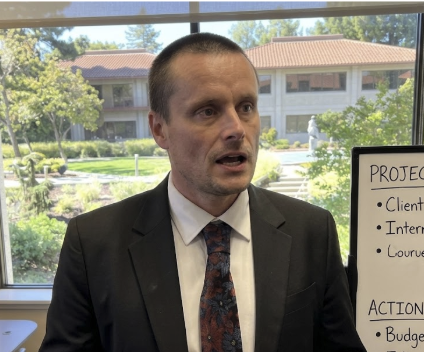

A :60 web/TV spot for Augment Code. Designers don't need developers. Developers don't need designers. Both are wrong — and when they finally collaborate through Intent, magic happens. Wes Anderson meets a Figma ad.
Three characters. Two parallel ego trips. One obvious solution no one thought to try.
Black turtleneck. Immaculate desk. One succulent, one monitor, a single pen aligned parallel to the keyboard. Speaks with the unearned confidence of someone who just shipped their first side project.
Think Jemaine Clement energy — poised, specific, slightly precious. The turtleneck is non-negotiable. Should deliver deadpan comedy with total commitment.
Energy drink cans stacked in a formation suggesting either art or negligence. Three monitors. Laptop stickers. A rubber duck on the monitor. The desk is beautiful chaos.
Kinetic, messy-confident, fast-talking. Feels like someone who lives in terminal windows and thinks CSS is a conspiracy. Think Martin Starr in Silicon Valley.

Warm, practical, slightly dad-energy. Not a villain — just the person who sees the obvious solution. The Manager gets the "Why don't you use AI to work together?" line, while the PM appears in the tag, chasing after the others with his "PRODUCT GUY" mug.
One line, physical comedy. Needs to sell FOMO in 3 seconds. The mug does half the work.
The emotional arc: dry comedy → kinetic momentum → golden-hour warmth. The color grade tracks the tone — from Fincher-cool to Saturday-afternoon warm.
Each shot includes a description, camera direction, dialogue, and an AI generation prompt. Interactive animations are embedded for screen-based shots. Click "Show Prompt" to reveal generation text.
Three musical identities that merge into one. The music mirrors the collaboration arc — separate instruments finding each other, building something together.
Quirky indie instrumental, 60 seconds. Opens with sparse plucked ukulele and glockenspiel — two-note motif, slightly off-kilter, Yann Tiersen-style. Playful but not wacky. At 11 seconds, same melody shifts to distorted 8-bit synth, slightly faster tempo. At 18 seconds, everything drops to a sustained pad — one second of near-silence, tension building. At 22 seconds, a propulsive percussive groove kicks in — think Ratatat meets Tycho. Driving, rhythmic, forward. Layers build: drums first, then bass, then full melody. The tempo feels like productivity in flow state. Cuts would land on every beat. The build peaks around 38–40 seconds with all layers playing. At 42 seconds, a musical breath — the density drops, space opens. At 45 seconds, warm acoustic resolve: same melody now on Rhodes piano and acoustic guitar, golden hour energy, sounds like arriving home. Final chord at 57 seconds sustains and decays gently into silence. No vocals. No comedy. The music is sincere — the humor lives elsewhere.
Score placeholder — generate with Suno using the prompt above, then drop the MP3 as score.mp3 in this folder.
The comedy in Act I is deadpan and character-driven. Nobody knows they're in a comedy. The Designer genuinely believes "works on my machine" is a valid response. The Developer is sincerely proud of his cockpit UI. The joke lives in the gap between their confidence and the evidence on screen.
The Manager is the straight man. His line is the most obvious thing anyone has ever said. That's the point.
Act I is Wes Anderson — locked-off symmetrical framing, centered compositions, deliberate dolly moves. The two setups must mirror each other exactly: same framing, same angle, same dolly speed. The visual parallel is the setup for the cubicle-wall reveal.
Act II is Edgar Wright — every cut is motivated by a musical beat, ping-pong editing, kinetic energy. The screens are the stars.
Act III is warmth — handheld, golden hour, lens flare earned. The camera should feel like it's smiling.
The spatial punchline at 0:18–0:22 is the structural hinge. The audience discovers Designer and Developer have been three feet apart, back-to-back this entire time. This lands only if the earlier shots never hint at the proximity — locked-off framing, no room tone bleed, no visual connection between the two spaces.
The half-second of dead silence after Manager's line is essential. Let the visual land before the synchronized eyebrow raise.
Act I (0:00–0:22): Cool, slightly desaturated. Fluorescent office tones. David Fincher office scenes — clean but sterile.
Act II (0:22–0:45): Gradual warm shift. Saturation increases imperceptibly across the montage. By shot 15, noticeably warmer than shot 10 — but the shift should be invisible on any single cut.
Act III (0:45–1:00): Full golden hour warmth. Rich, saturated, alive. The courtyard should feel like a completely different world — even though it's the same building.
All on-screen UI must be built and functional — not comped in post. The audience includes designers and developers who will freeze-frame. Every pixel matters.
The "design tokens flowing into code" moment (montage shot 3–5) is the hero product beat. It should feel like magic — seamless, immediate, and slightly awe-inspiring even to people who don't know what design tokens are.
:30 cutdown: Designer setup → Developer setup → Manager reveal → 3-shot montage → End card. Lose the courtyard. Lose the PM tag.
:15 cutdown: Designer localhost fail → Developer cockpit UI → Split screen convergence → End card. Pure visual storytelling. No dialogue.
:06 bumper: Split screen: design left, code right. They merge in the center. "Build with Intent."